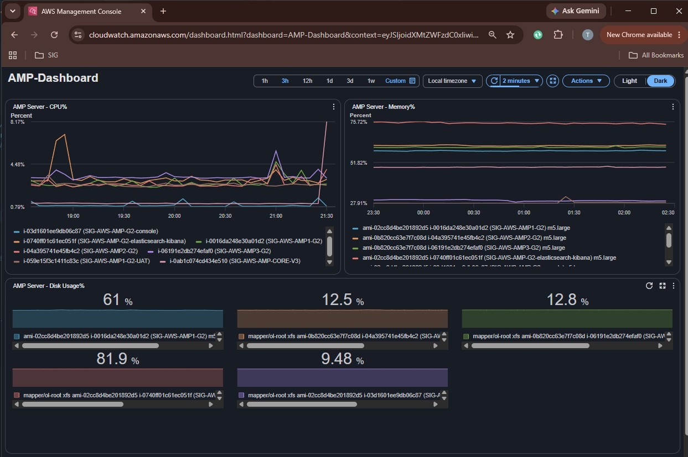
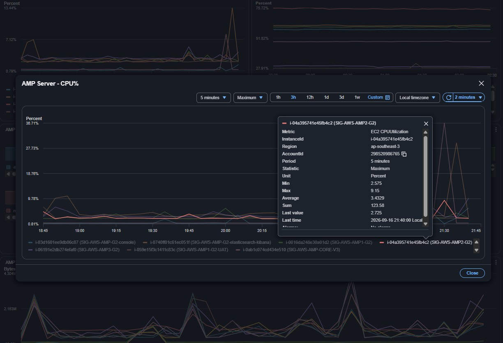
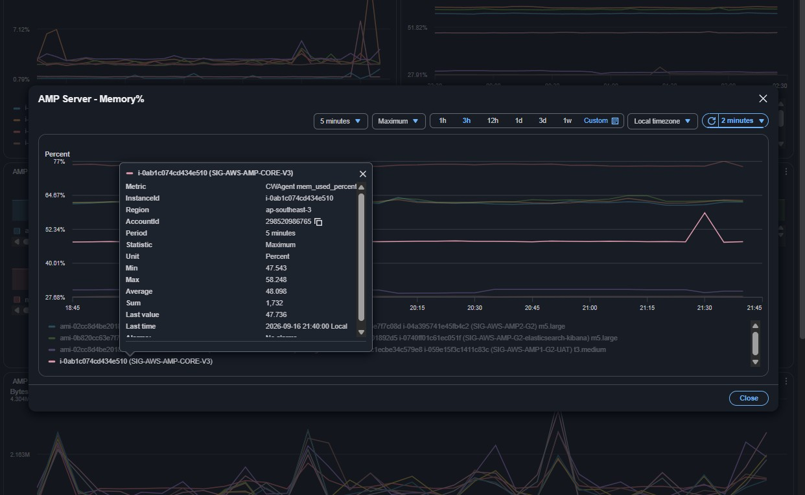
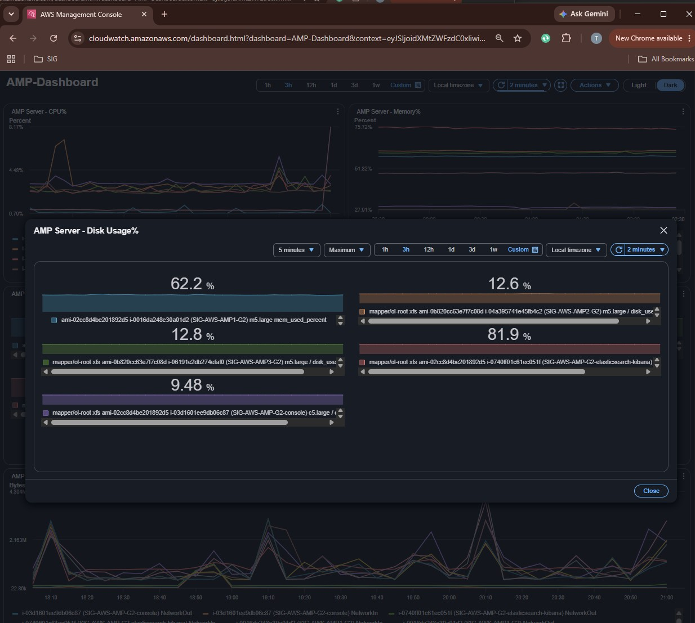
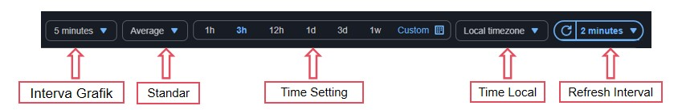

AMP Server CPU
Memantau tren beban prosesor server dari waktu ke waktu. Garis yang melonjak tajam (spike) menandakan proses komputasi berat pada server.
Tools monitoring dari Amazon Web Services (AWS) untuk memantau data usage resource server AMP secara real-time.
Halaman utama AMP Dashboard memberikan ringkasan (overview) data usage CPU, Memory dan Disk secara real-time. Akses AWS CloudWatch dengan link dan akun berikut:




Fokuskan monitoring pada pergerakan grafik CPU, Memory dan Disk. Pilih Maximize dan setting standar Maximum pada masing-masing server. Fungsi monitoring tiap grafik:
Memantau tren beban prosesor server dari waktu ke waktu. Garis yang melonjak tajam (spike) menandakan proses komputasi berat pada server.
Memantau penggunaan RAM. Garis datar dan konsisten berarti stabil; lonjakan tajam umumnya karena peningkatan trafik atau query data yang masif.
Memantau penggunaan ruang penyimpanan. Kenaikan terus-menerus atau lonjakan mendadak menandakan disk mendekati penuh, misalnya karena log atau file besar.
Team Helpdesk bisa menyesuaikan rentang waktu, detail grafik, zona waktu, hingga pembaruan otomatis tanpa mengubah konfigurasi dari backend.

Jika usage mencapai atau melebihi 80%, lakukan langkah berikut:
Lost grafik bisa disebabkan server down atau restart aplikasi pengumpul metrik (Prometheus) setelah aktivitas housekeeping.